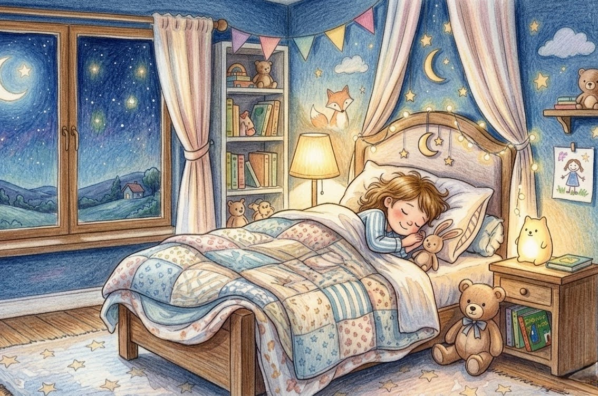
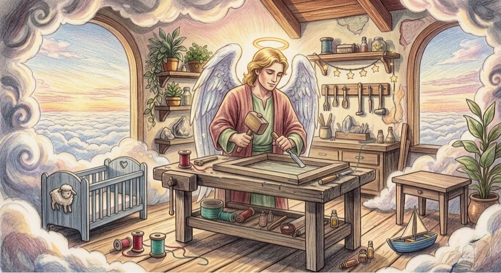
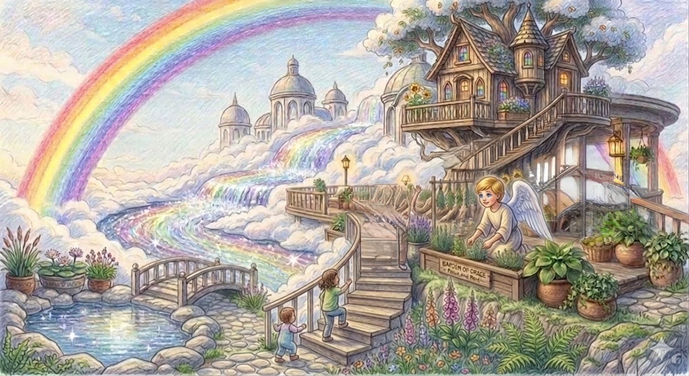

天国でのイエスさま
みんなが ぐっすり
ねむる ころ、おそらの
うえでは トントン カンカン。
だれかが おしごとを
しているよ。
それは、だいすきな
イエスさまのお手伝いをする天使。
イエスさまは、あなたが
ねむっている あいだも、
やすまずに お祈りして
くれているんだよ。
『イスラエルを まもる かたは
まどろむことも なく、
ねむることも ない。』
（詩編 121:4）

てんごくの大工さん
イエスさまに、この子は
えをかくのがすきだからがくぶちを
よういしてあげて。
そういわれたので とんとんかんかん！
てんし は たのしく つくっています。
イエスさまが まかせてくれた!
がんばるぞ！ そういって
あなたのために さいこうの
おうちを つくろうと、
ひとつひとつ ていねいに
つくってくれているよ。

あなただけのおうち
「この まどからは、きれいな
にじが みえるようにしよう」
「おにわには、だいすきな
おはなを いっぱい さかせよう」
てんしが つくる おうちは
とっても じょうぶで、
せかいで いちばん
あんしんできる ばしょなんだ。
『わたしの ちちの いえには
すまいが たくさん ある。
あなたがたのために ばしょを
よういしに いくのだ。』
（ヨハネ 14:2）
あとがき
イエスさまが てんしに言って
よういしてくれている おうちは、
いつか あなたが
かえる ばしょ。
そこには なみだも いたみも
なくて、キラキラした
ひかりが あふれているよ。
だから 安心して、ゆっくり
おやすみなさい。
あなたは、せかいで いちばん
たいせつに おもわれている
人なのですから。
イエスさまのおなまえを
とおして、おいのりします。
アーメン。